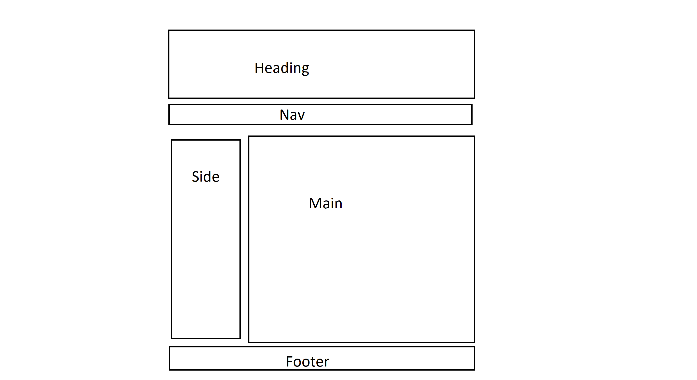
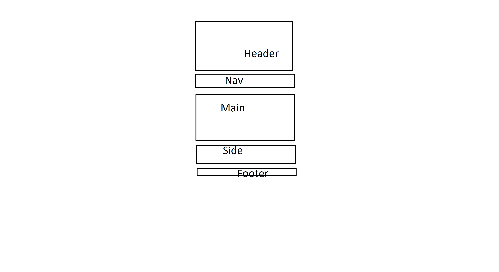

The People of Solace's Chamber of Commerce. I picked this name because it fits well, and makes it seem more involved with the community.
This Chamber was made to promote healthy business and bring to light the lesser known businesses so that we all have an opportunity to grow together
- What are the pressing topics spoken of in meetings?
- Is Solace a good place to start a business?
- How will the war affect the local economy?
Black and red are the two main color schemes. The main color for most text will be red, and many backgrounds will have black or gray. Some blue will be added as an accent.
IM Fell Double Pica was chosen as the main font, and will be used most everywhere on the site. Rubik Glitch may be used sparingly.
 